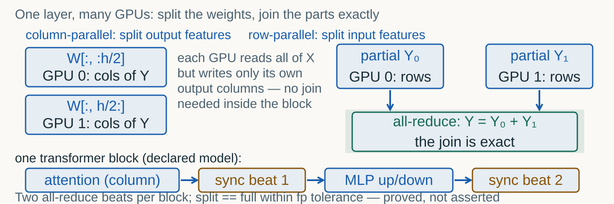
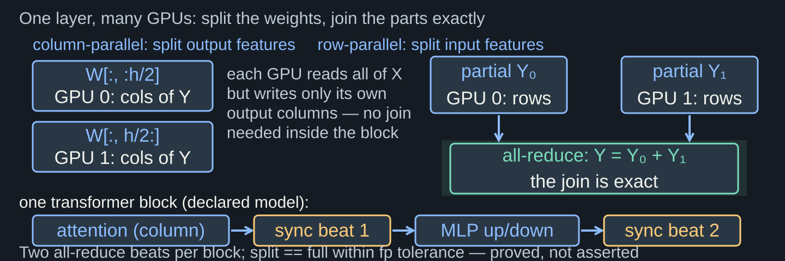
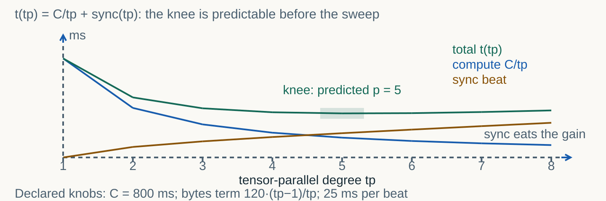
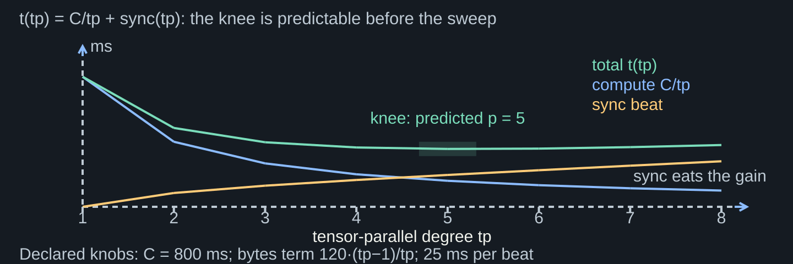
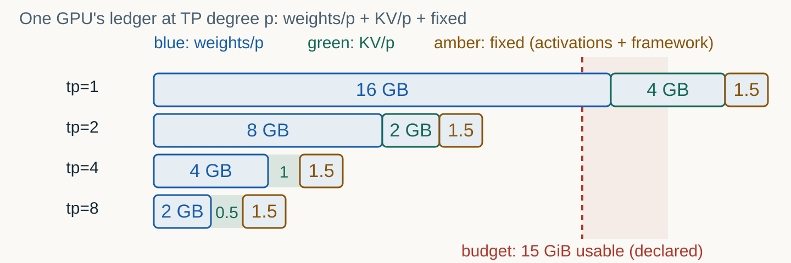
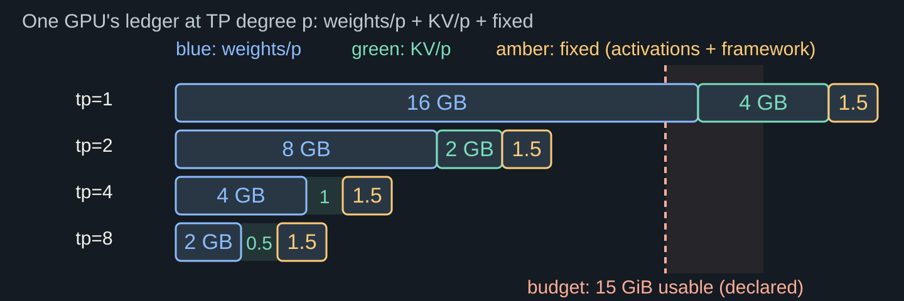

Split the weights exactly, pay the sync beat knowingly — a grand piano carried in step.
An 8B model in fp16 is ~16 GB of weights alone, plus the KV cache and activations — against a usable budget of ~15 GiB on one accelerator. Does not fit, does not start.
Even when it fits: autoregression is a chain, one stream on one device — batching buys throughput, not a shorter token step. A bigger GPU is one answer; axes are another.
| Axis | What is split | Pays for it with | First choice when |
|---|---|---|---|
| TP | weight matrices of ONE layer | all-reduce beats (fast bus required) | model does not fit / shorter step, inside one node |
| PP | layers across devices | pipeline bubbles | depth does not fit; slow links tolerated |
| DP | nothing — full replicas | more hardware, near-zero comm | model fits; throughput is the goal |
| EP | experts (MoE) | expert routing | mixture-of-experts architectures |


MLP up-projection is column-parallel (no join mid-block), down-projection is row-parallel (partials joined by a sum). The lab proves the assembly equals the full matmul to 1e-10 — measured, not asserted.
LayerNorm, residuals and the softmax over the full vocab do not split for free: they are replicated or re-joined at the beats. Two all-reduces per block is the declared price.


From the clean model (no beats, no stragglers) the plan predicts the knee and the minimal fitting degree — frozen into tp-plan.json BEFORE any sweep. The Topic 06 discipline, third outing.
The sweep runs the full declared model: per-beat price and straggler multipliers move the knee. A mismatch with the plan is a named mechanism — the beat term — not noise.
| Assembly | Max-abs error vs full matmul | Verdict |
|---|---|---|
| tp = 1 (identity split) | 0.0 | trivially equal |
| tp = 2 | 8.9e-16 | equal within fp tolerance |
| tp = 4 | 6.7e-16 | equal within fp tolerance |
Weights (16 GB → 8 → 4 → 2) and the KV cache (4 GB → 2 → 1 → 0.5): heads and layers are partitioned, every GPU holds its share.
Activations and framework overhead stay ~1.5 GB per GPU at every degree. The budget line (15 GiB usable) judges the WHOLE bar, not the weights row.


| Degree | Weights/p | KV/p | Fixed | Total | Fits 15 GiB |
|---|---|---|---|---|---|
| tp=1 | 16 GB | 4 GB | 1.5 | 21.5 GB | no — the wall |
| tp=2 | 8 GB | 2 GB | 1.5 | 11.5 GB | yes — minimal fit |
| tp=4 | 4 GB | 1 GB | 1.5 | 6.5 GB | yes — KV headroom |
| tp=8 | 2 GB | 0.5 GB | 1.5 | 4.0 GB | yes — pays beats for nothing here |
Past the knee the sync term dominates: raising the degree RAISES the step. On a narrow bus (PCIe vs NVLink) the knee moves left — sometimes all the way to tp=1.
If the model fits and the batch is wide, DP replicas beat TP: no beats, near-perfect scaling. TP answers «does not fit / shorter step», not «more throughput» at any price.
The sync beat waits for everyone: one GPU two times slower sets the whole step. Dividing by tp does not fix an imbalance — it multiplies its exposure.
Identical hardware, even partition sizes, no background tenants. The straggler drill reads a transcript where max/median = 2.0 and names the fix.
| Drill | Transcript says | Cause → Evidence → Fix |
|---|---|---|
| comm-bound | tp 2→8: compute 401→99 ms falls, total 489→451→... rises past the knee | sync dominates → wall times by degree → lower the degree / faster bus / fewer bytes |
| straggler | shards [101, 103, 99, 205] ms — one twice slower | imbalance → max/median = 2.0 > 1.5 → balance and identical hardware |
The clean model is monotone: «the more GPUs the better» — predicted knee p = 8, frozen before the sweep.
Observed knee p = 5 (354.6 ms declared): the per-beat price and straggler multipliers — the exact terms the plan omitted. Mechanism named; the claim is honest.
tensor_parallel_size=N is one line of config; NCCL does the joins. The flag starts the machinery — the knee decides whether it helps.
The multi-GPU route is an owner demonstration with retained evidence (episode 5, 7, 9 configurations). Students ship the declared CPU lab — no GPU numbers enter their materials.
| Field | Value | Why |
|---|---|---|
| flag | tensor_parallel_size | the only TP knob vLLM exposes at top level |
| minimal fit for the 8B example | 2 | ledger: 16/2 + 4/2 + 1.5 = 11.5 GB ≤ 15 GiB |
| precondition | fast interconnect inside one node | two all-reduce beats per block, every layer |
| evidence route | owner demonstration, separate record | no student GPU numbers in course materials |
The split proof is real NumPy (error ≤ 1e-10); every millisecond is declared arithmetic with named knobs written on the slides and in the notebook.
Real all-reduce latencies, NCCL behaviour, thermal stragglers: the multi-GPU vLLM demonstration is an owner record. A student quoting 354.6 ms as hardware has failed the reading.
| Block | You do | It is done when |
|---|---|---|
| 0 Predict | Freeze the knee prediction and the fit degree | tp-plan.json exists before any sweep |
| 1 Prove | Write the shards and the all-reduce; compare to full | split == full to 1e-10 in the journal |
| 2 Sweep | Degrees 1..8 through the declared engine | sweep.json + measured-vs-clean curve |
| 3 Ledger | Itemise per-GPU memory; decide the minimal fit | ledger.json + the fit line |
| 4 Drills | Classify comm-bound and straggler transcripts | cause/evidence/fix in drills.json |
| Stretch | Axis map + the vLLM TP card | placement paragraphs written |
Topic 09 made the unit immutable; Topic 10 multiplied ONE unit across the GPUs of one node — with its own ledger (memory) and its own beats (sync).
Kubernetes schedules such units across machines. None of it composes if each scaling layer hides its own ledger: GPU ledger today, pod ledger next.
Predict the knee. Prove the split. Ledger the memory.
Name the mechanism. Journal everything.